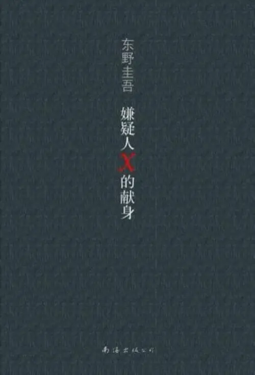

我喜爱的书籍

《嫌疑人X的献身》是日本推理小说作家东野圭吾创作的长篇推理小说，也是“伽利略系列”的第三本小说。
该作讲述一个数学天才为了帮助一对母女隐藏杀害前夫的罪行，和警方展开了一连串的斗智，制造整个骗局。
《嫌疑人x的献身》
《放学后》是日本作家东野圭吾早期作品、代表作之一。1985年，《放学后》获得江户川乱步奖。
该作描写了被学生成为"机器"的一名教师，身边先后发生三起命案，认为凶手真正的目标可能是自己，全作通篇都聚焦于"凶手是谁"。
《放学后》
《时生》是日本推理作家东野圭吾2002年创作的长篇小说。
该书主要讲述了时生回到过去改变父亲的未来，本作将时代的变迁与个体的变化结合在一起，虚幻靓丽的经济泡沫和遥远往昔的人情世故纠缠形成了拓实成长的背景。
《时生》
《人间失格》日本小说家太宰治创作的中篇小说，发表于1948年，是一部半自传体的小说。
该书以“我”看到叶藏的三张照片后的感想开头，分别介绍了叶藏幼年、青年和壮年时代的经历，描述了其是如何一步一步走向丧失为人资格的道路的。
《人间失格》